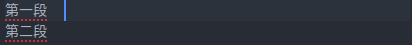

摘要：Markdown标准语法；示例；使用技巧。
1 标题
用 # 号标记，一级标题对应一个 # 号，二级标题对应两个 # 号，以此类推。
1 | # 一级标题 |
2 段落
在段落后面使用一个空行或两个空格加回车来表示重新开始一个段落。
1 | 第一段 |
或

3 字体样式
1 | *斜体文本* |
显示效果：
斜体文本
粗体文本
粗斜体文本
带删除线文本
带下划线文本
4 分隔线
1 | --- |
5 列表
1 | * 第一项 |
显示效果：
- 第一项
- 第二项
- 第三项
- 第一项
- 第二项
- 第三项
- 第一项
- 第一项嵌套的第一个元素
- 第一项嵌套的第二个元素
6 代码
代码片段
1 | `printf()` 函数 |
显示效果：printf() 函数
代码块
1 | ```javascript |
显示效果：1
2
3$(document).ready(function () {
alert('RUNOOB');
});
7 链接
1 | 链接[github](https://github.com) |
显示效果：
链接github
8 图片
1 |  |
显示效果：
9 表格
1 | | 左对齐 | 右对齐 | 居中对齐 | |
显示效果：
| 左对齐 | 右对齐 | 居中对齐 |
|---|---|---|
| 1 | 2 | 3 |
注：为防止渲染问题,表格前后最好空一行。